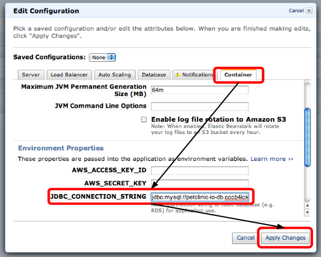

Dans ce workshop, vous aurez à votre disposition une instance amazon. Vous pouvez également utiliser directement votre machine, ou si vous le préférez, une machine virtuelle.
Toutes les machines utilisent la même clef ssh, et ont le même login ubuntu.
Pour vous connecter à votre machine, placez le fichier docker-janvier.pem ou le fichier docker-janvier.ppk pour les utilisateurs Windows, dans votre répertoire courant (la clef sera révoquée après le workshop). N'oubliez pas de changer les permissions sur le fichier :
$ chmod 400 docker-janvier.pemPour tester l'installation, et vous connecter à la première instance, tapez la commande :
$ ssh -i docker-janvier.pem ubuntu@docker-.aws.xebiatechevent.infoIntroduction à docker

Commandes de base de docker
Les images docker
Pour commencer à jouer avec docker, nous allons commencer par chercher une image de base. Les images de base correspondent plus ou moins à des distributions linux sans kernel. Pour voir la liste des images disponibles, tapez la commande :
$ docker imagesPar défaut, nous vous avons déjà téléchargé une image de type Ubuntu, c'est celle-ci que vous voyez. Nous allons maintenant essayer de récupérer une image de type busybox. C'est une distribution linux minimaliste. Pour commencer, nous allons chercher cette image sur le hub docker :
$ docker search busyboxNous remarquons que nous avons plusieurs images de type busybox à notre disposition. Nous allons maintenant récupérer l'image officielle :
$ docker pull busyboxMaintenant, réafficher la liste des images pour constater que l'image busybox est maintenant disponible en local sur la machine.
Il est également possible de supprimer une image. Pour cela, lancer simplement la commande :
$ docker rmi busyboxLancer un container docker
Maintenant que nous savons récupérer des images docker, nous allons commencer à jouer avec. Pour commencer, nous allons lancer un container Ubuntu en lui spécifiant une commande en paramètre.
$ docker run ubuntu uname -rConcrètement, nous venons de lancer un container docker basé sur une image de type Ubuntu, et nous lui avons demandé de lancer la commande uname -r (commande qui permet de connaître la version du noyau linux, et qui nous permet facilement de vérifier que les containers partagent le même kernel que leur host.). Une fois cette commande achevée, le container s'est éteint de lui même. C'est la une propriété intéressante des containers docker : si il n'a plus de processus en foreground, le container s'éteint. Pour le vérifier, nous pouvons lancer la commande :
$ docker psqui à l'instar de son éponyme linux, liste les containers docker vivants. Nous pouvons aussi lancer la commande :
$ docker ps -aqui affiche la liste de tous les containers.
Création d'une image docker
Nous allons maintenant essayer de créer une image docker basée sur Ubuntu et contenant un serveur apache (sans ce baser sur une image existante sur le dockerhub). Pour cela, vous allez lancer votre image docker avec un bash en mode interactif (option -it). Pour information, la commande docker ps vous donne l'identifiant unique du container, et la commande pour commiter un container est docker commit
Remarque : la commande pour lancer apache en foreground est :
apache2ctl -f /etc/apache2/apache2.conf -e info -DFOREGROUND $ docker run -i -t --name="apache2-build" ubuntu /bin/bash
$ apt-get install apache2
$ exit (on quitte le container)
$ docker commit apache2-build apache2
$ docker run -t -i --name="apache2BuildContainer" apache2 apache2ctl -f /etc/apache2/apache2.conf -e info -DFOREGROUND
Astuce : Si vous souhaitez vous détacher de votre container sans pour autant l'arrêter, vous pouvez utiliser la combinaison de touches suivantes Ctrl + P / Ctrl + Q. Alors vous pourrez vous réattacher à votre containeur en utilisant la commande docker attach
$ docker attach $(docker ps -lq)Récupérer les informations d'un container docker
Maintenant que notre container docker est démarré, nous aimerions bien récupérer certaines informations comme par exemple son adresse IP. Pour cela, docker possède la commande docker inspect. À l'aide de cette commande, essayez de récuperer l'adresse IP du container et de récuperer la page d'accueil avec une commande type curl ou wget
$ docker inspect apache2BuildContainer | grep IPAddress
$ wget xxx.xxx.xxx.xxx
Supprimer un container docker
Même éteint, un container docker reste présent pour être potentiellement réutilisé par la suite. Pour supprimer un container, on peut utiliser la commande :
$ docker rm apache2BuildContainerGérer la mémoire et le CPU
Il est possible de spécifier à notre container la quantité de mémoire que nous allons lui allouer, ainsi que la portion du cpu qu'il est autorisé à utiliser. Essayez de limiter la mémoire allouée à notre container par exemple à 5 Mo.
$ docker rm apache2BuildContainer
$ docker run -m 5m -t -i --name apache2BuildContainer apache2 apache2ctl -f /etc/apache2/apache2.conf -e info -DFOREGROUND
Les redirections de port
Pouvoir accéder à un container via son adresse IP est bien, mais dans la majorité des cas, on aura uniquement accès à l'adresse IP de l'hôte. Pour contourner se problème, docker permet de faire du forwarding de port entre le container et l'hôte. Rediriger le port 8000 du container vers le port 80 du la machine hôte. Pour tester, vous pouvez utiliser la commande :
$ wget localhost:8000 $ docker rm apache2BuildContainer
$ docker run -t -i -p 8000:80 --name="apache2BuildContainer" apache2 apache2ctl -f /etc/apache2/apache2.conf -e info -DFOREGROUND
Les personnes connaissant un peu netfilter peuvent lancer la commande suivante :
$ sudo iptables -t nat -LLes volumes
Un container docker est par définition immutable. Cela signifie que si on souhaite en utiliser un pour héberger un site web, il faudrait créer un nouveau container dès qu'une modification du site aurait lieu. (Ceci n'est pas forcément une mauvaise solution).
On va donc créer un répertoire sur la machine hôte pour stocker notre site web (par exemple en créant un fichier index.html bidon), puis monter ce répertoire sur le container docker.
Lien vers la documentation $ docker rm apache2BuildContainer
$ mkdir www
$ echo coucou > www/index.html
$ docker run -t -i -p 8000:80 -v ~/www:/var/www/html --name="apache2BuildContainer" apache2 apache2ctl -f /etc/apache2/apache2.conf -e info -DFOREGROUND
Création de votre Dockerfile
Dans la première partie, nous avons vu comment créer un container docker à partir des commandes de base. Il existe un autre moyen de créer des containers docker grâce à un fichier appelé Dockerfile.
La commande docker build lancée dans un répertoire cherche un fichier nommé Dockerfile, et à partir de celui-ci crée une image docker. Cette image peut ensuite être utilisée pour lancer un container.
Lien vers la documentationCréation de notre container apache
En nous basant sur ce que nous avons vu dans la première partie, nous allons créer un container contenant un serveur apache. Pour commencer, nous allons lui spécifier à partir de quelle image de base nous souhaitons travailler. Dans notre cas, il s'agit toujours d'une image Ubuntu
FROM ubuntu
Une fois cela fait, vous pouvez lancer la commande suivante pour créer votre image. L'option -t permet de donner un nom à cet image
$ docker build -t="xebia/apache" .Vous pouvez spécifier si vous le souhaiter le nom de la personne qui maintient cette image. Cette information est surtout utile si vous souhaitez sauver votre image sur le dockerhub.
FROM ubuntu
MAINTAINER Xebia
Maintenant, nous allons indiquer à docker d'intégrer un serveur apache à notre image (lors du docker build).
FROM ubuntu
MAINTAINER Xebia
RUN apt-get update && apt-get -y install apache2 && apt-get clean
On peut également spécifier dans le Dockerfile des variables d'environnement qui pourront être réutilisées par la suite. Définissez les variables d'environnement APACHE_RUN_USER et APACHE_RUN_GROUP avec la valeur www-data afin de lancer par la suite notre serveur apache avec des droits restreints. (Le fait d'avoir un processus isolé dans un container ne veut absolument pas dire que l'on peut tout lancer en root.)
FROM ubuntu
MAINTAINER Xebia
RUN apt-get update && apt-get -y install apache2 && apt-get clean
ENV APACHE_RUN_USER www-data
ENV APACHE_RUN_GROUP www-data
Indiquer ensuite que vous souhaiter exposer le port 80 de notre container à l'hôte.
FROM ubuntu
MAINTAINER Xebia
RUN apt-get update && apt-get -y install apache2 && apt-get clean
ENV APACHE_RUN_USER www-data
ENV APACHE_RUN_GROUP www-data
EXPOSE 80
Pour finir, on va indiquer la commande que notre container va exécuter une fois que celui-ci sera lancé.
FROM ubuntu
MAINTAINER Xebia
RUN apt-get update && apt-get -y install apache2 && apt-get clean
ENV APACHE_RUN_USER www-data
ENV APACHE_RUN_GROUP www-data
EXPOSE 80
ENTRYPOINT ["/usr/sbin/apache2ctl", "-D", "FOREGROUND"]
Vous pouvez maintenant lancer votre container apache grâce à la commande :
$ docker run -d -p 8000:80 --name="apache2" xebia/apacheCommunication inter-container
Dans cette partie nous allons créer deux container avec pour objectif d'établir une connexion entre ces-derniers. Nous allons créer deux containers : l'un contenant un serveur apache, et l'autre contenant un serveur Tomcat. Une fois ces deux serveurs créés, nous verrons comment les faire communiquer entre eux. Vous pourrez utiliser l'image créée dans la partie précédente pour démarrer un conteneur apache
Création de notre container Tomcat
Vous allez maintenant procéder de manière similaire pour créer une image basée sur Ubuntu et contenant un serveur Tomcat. Pensez à exposer le port 8080 et à ne pas lancer Tomcat en arrière plan.
Commencez par créer un nouveau Dockerfile pour construire l'image tomcat
FROM ubuntu
MAINTAINER Xebia
RUN apt-get update && apt-get -y install tomcat7 && apt-get clean
EXPOSE 8080
CMD service tomcat7 start & touch foreground && tail -f foreground
Une fois le Dockerfile créé, vous pouvez construire votre image tomcat puis lancer un container :
$ docker build -t="xebia/tomcat" .
$ docker run -d -p 8080:8080 --name tomcat xebia/tomcat
Utilisez wget, curl ou encore votre navigateur pour tester que tomcat est bien démarré :
$ curl localhost:8080Lier le container apache avec le container Tomcat
Maintenant que nous avons créé nos containers, nous allons essayer de les lier entre eux. Pour cela, nous allons commencer par modifier notre image apache afin de la transformer en proxy, afin de rediriger les requêtes à destination du serveur apache vers le Tomcat.
Fichier apache-config.conf
<VirtualHost *:80>
ProxyPass / http://tomcat:8080
ProxyPassReverse / http://tomcat:8080
<Location />
Order allow,deny
Allow from all
</Location>
</VirtualHost>Pour construire une nouvelle image avec un Apache configuré en proxy, vous devez enrichir le Dockerfile existant :
- Activer les modules proxy et proxy_http (commande a2enmod)
- Remplacer le fichier /etc/apache2/sites-enabled/000-default.conf par le fichier apache-config.conf fourni
FROM ubuntu
MAINTAINER Xebia
RUN apt-get update && apt-get -y install apache2 && apt-get clean
ENV APACHE_RUN_USER www-data
ENV APACHE_RUN_GROUP www-data
EXPOSE 80
# Enable proxy and proxy_http mod
RUN a2enmod proxy proxy_http
# Update the default apache site with the config we created.
ADD apache-config.conf /etc/apache2/sites-enabled/000-default.conf
CMD apache2ctl restart
CMD apache2ctl -D FOREGROUND
Construisez votre nouvelle image et lancer la avec l'option link.
Lien vers la documentation $ docker build -t="xebia/apache" .
$ docker run -d -p 8000:80 --name apache --link tomcat:tomcat xebia/apache
Rendez-vous maintenant à l'adresse du serveur apache, et la page d'accueil de tomcat doit s'afficher.
$ curl localhost:8000Vous remarquerez que dans la configuration du apache nous redirigeons le trafic vers http://tomcat/. Cela est possible car docker a ajouté une entrée dans le /etc/hosts de notre container apache, pour l'observer :
docker exec apache cat /etc/hostsOrchestration avec Fig
Fig est un outil permettant de définir l'ensemble des services qui composent une application au sein d'un même fichier de description, afin de pouvoir les lancer conjointement au sein d'un environnement isolé.
Installation de Fig
Fig se présente sous la forme d'un binaire qui peut être installé de manière très simple avec la commande suivante :
$ curl -L https://github.com/docker/fig/releases/download/1.0.1/fig-`uname -s`-`uname -m` > /usr/local/bin/fig
$ chmod +x /usr/local/bin/fig
$ fig --version
fig 1.0.1Utilisation de Fig
Créer un fichier fig.yml pour stocker les propriétés d'éxécution de votre application :
web:
image: xebia/apache
ports:
- "8000:80"
links:
- tomcat:tomcat
tomcat:
image: xebia/tomcatIl ne vous reste plus qu'à lancer la commande fig up et regarder fig construire puis lancer votre application avec les bons paramètres, notamment les liens entre vos différents containers
Remarque: n'oubliez pas de détruire les containers déjà crées afin de libérer les ports de la machine hôte et les noms de containers
docker rm -f $(docker ps -aq)Utilisation du Docker Hub

Création de votre compte
Un compte sur Docker Hub vous permettra de stocker vos images dans le registre. Pour commencer il suffit d'aller à l'adresse suivante hub.docker.com et de remplir le formulaire
Remarque : Le nom d'utilisateur doit impérativement être en minuscule

Maintenant que vous avez créé votre compte, il va falloir l'activer. Consultez vos e-mails, et cliquez sur le lien de confirmation.
C'est le moment d'utiliser votre nouveau compte pour vous connecter sur le Docker Hub!
$ docker login
Username:
Password:
Email: @email.com
Login SucceededVos identifiants de connexion sont stockés au sein du fichier ~/.dockercfg
$ cat ~/.dockercfg
{
"https://index.docker.io/v1/": {
"auth":"gjfhdkhgurieabirueb=",
"email":"@email.com"
}
}Vous pouvez maintenant naviguer au sein du Docker Hub! L'onglet "repositories" contient toutes vos images publiques ou privées.
Docker Hub donne accès à plusieurs dizaines de milliers d'images sur lesquelles vous pouvez vous appuyer pour construire vos propre images.
Certaines de ces images sont des images officielles et n'utilisent pas de namespace. La plupart des images sont créées et maintenues par la communauté
Création d'un Repository
Cliquez sur le menu déroulant Add Repository et sélectionnez Repository

Vous pouvez laisser le namespace par défaut (votre username), puis indiquez le nom de votre repository. Vous pouvez également ajouter un bref descriptif et enfin, laissez Public sélectionné pour le type de repository. Vous pouvez maintenant soumettre le formulaire en cliquant sur le bouton Add Repository

En cliquant sur Repositories, vous pouvez voir votre nouveau repository. Il vous est dès à présent possible de pousser des images sur ce repository à partir de la ligne de commande docker.
Pour commencer, lancer un terminal à l'intérieur d'un container Ubuntu en mode interactif
$ docker run -it ubuntu bash
root@<votreContaineurId>:/#
Il faut maintenant rafraichir la liste des packages disponibles à l'installation, puis installer le package cmatrix.
root@<votreContaineurId>:/# apt-get update && apt-get install -y cmatrix
Tapez exit dans le terminal afin de quitter la session interactive. Vous pouvez maintenant examiner les changements effectués sur votre container en utilisant la commande docker diff
$ docker diff $(docker ps -lq)
...
C /usr/bin
A /usr/bin/cmatrix
C /root
A /root/.bash_history
...
Docker conserve la trace de tous les fichiers qui ont été modifiés (C), ajoutés (A) ou supprimés (D) par rapport à l'image de base utilisée pour construire le containeur. Par exemple, le fichier .bash_history a été créé car vous avez éxécuté des commandes dans l'invité de commande.
Vous pouvez maintenant commiter ces modifications afin de pouvoir créer votre propre image cmatrix en indiquant un tag afin de préparer le push sur le registre.
$ docker commit $(docker ps -lq) /cmatrix
<monImageId>
Vous pouvez maintenant utiliser le tag de votre image pour lancer votre container
$ docker run -it /cmatrix cmatrixSi vous êtes curieux, vous pouvez jeter un oeil à toutes les couches qui composent votre image avec la commande docker history
$ docker history /cmatrixMaintenant que votre image est correctement nommée, vous pouvez la pousser sur le registre
$ docker push /cmatrix
The push refers to a repository [/cmatrix] (len: 1)
Sending image list
Pushing repository /cmatrix (1 tags)
511136ea3c5a: Image already pushed, skipping
3b363fd9d7da: Image already pushed, skipping
607c5d1cca71: Image already pushed, skipping
f62feddc05dc: Image already pushed, skipping
8eaa4ff06b53: Image already pushed, skipping
45994cc5ab57: Image already pushed, skipping
Pushing tag for rev [45994cc5ab57] on {https://cdn-registry-1.docker.io/v1/repositories//cmatrix/tags/latest}Vous pouvez maintenant retourner sur le Docker Hub et vérifier que votre image a bien été poussée en consultant la liste des tags.

Vous pouvez également utiliser le tag de votre image pour lancer votre container depuis le Docker Hub. Pour cela commencez par supprimer le container que vous venez de lancer puis supprimez l'image /cmatrix
$ docker rm -f $(docker ps -lq)
<monImageId>
$ docker rmi /cmatrix
Untagged: /cmatrix:latest
Deleted: <monImageId>
À présent, relancez votre image depuis le Docker Hub
$ docker run -it /cmatrix cmatrix